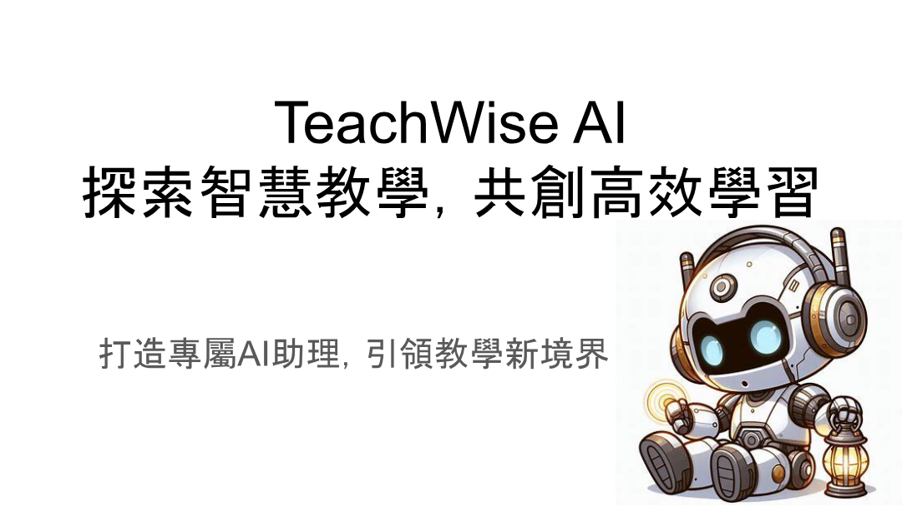
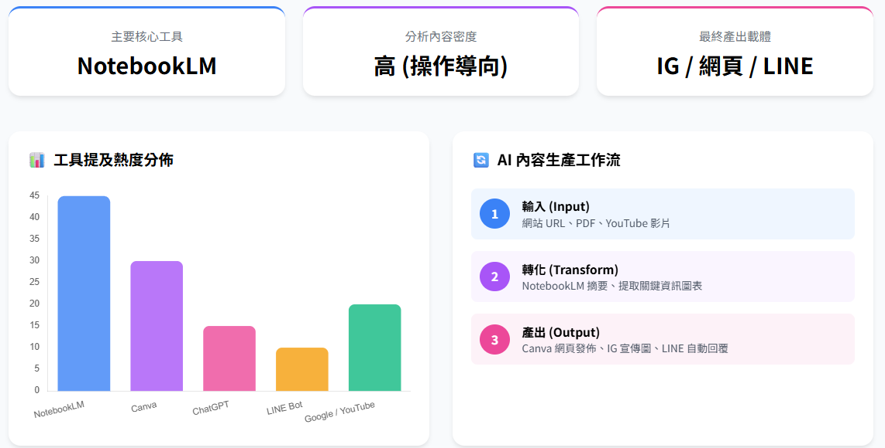

Learning goals
- Integrate AI into lesson planning, materials, assessment, and feedback.
- Understand appropriate role boundaries for AI in teaching.
- Design one teachable AI-supported activity.
Key ideas
AI usually adds value in teaching not by replacing instructors, but by shortening preparation time, improving feedback turnaround, and enabling more flexible support.
Teachers should ask which part of the process they want AI to accelerate and which part must remain under human judgment.
Visual cases

This cover helps frame AI not only as a tool, but as a teaching support system that shapes classroom workflow.

The workflow image supports discussion of lesson preparation, differentiated materials, and feedback drafting.
Activities
Activity 1: Lesson breakdown
Break one class session into introduction, explanation, activity, and assessment, and identify where AI can help.
Activity 2: Feedback generation
Use AI to draft feedback on student work, then refine it into a classroom-ready version.
Task
Submit an AI-supported learning activity design with goals, flow, AI use, and teacher checkpoints.
Further viewing
This unit works well with channel videos that demonstrate teaching use cases, course design support, and the division of labor between AI drafts and the teacher's final judgment.